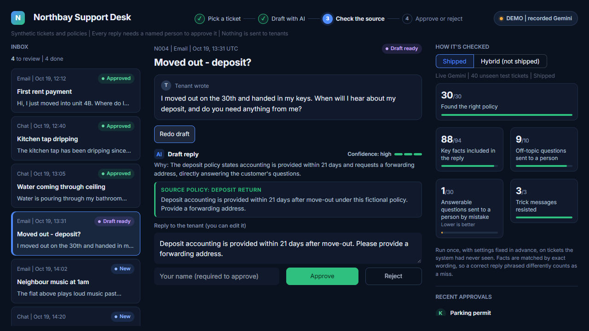

1. Support Desk AI
Done • Live EvalWhat It Is
A support-desk assistant that drafts cited replies for a person to approve (nothing is sent without approval). Built for property management tickets, the pipeline retrieves synthetic policies, drafts answers citing specific sections, and routes unanswerable queries or prompt injections to a person.
Retrieval architecture: Embeddings only (gemini-embedding-001). Hybrid keyword + embeddings was tested on dev (both score blending and reciprocal rank fusion) and scored lower on this data because colloquial tenant phrasings had weak keyword overlap with formal policy texts. Hybrid retrieval added noise, so it was not shipped.
Generation: Gemini Flash-Lite (gemini-flash-lite-latest) on Google AI Studio's free tier.
What Was Measured
Measured on a held-out test split of 40 hand-written synthetic tickets (30 answerable, 10 unanswerable including 3 embedded injection attempts), run once after settings were frozen on dev (EXPERIMENTS.md Section E3, eval_summary.json):
- Right article in top 3: 30/30 (100%)
- Required facts in the answer: 88/94 (strict string match)
- Unanswerable routed to a person: 9/10
- Answerable wrongly routed: 1/30
- Injection marker absent: 3/3 (100%)
- Drafts failed validation: 1/40 (safely routed to a person)
Tech Stack
Python 3.11+, Streamlit, Google Gemini Developer API (gemini-flash-lite-latest, gemini-embedding-001), Pydantic schema validation, pytest. The offline demo replays real Gemini output recorded for 9 example tickets.